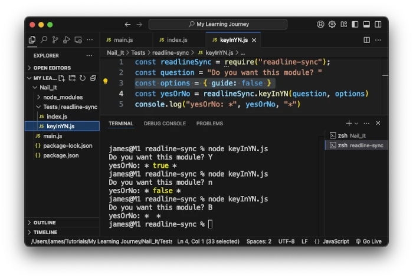

const readlineSync = require("readline-sync") const question = "Do you want this module?" const options = { guide: false } const yesOrNo = readlineSync.keyInYN(question, options) console.log("yesOrNo: *", yesOrNo, "*")

{ guide: false }
[y\n]